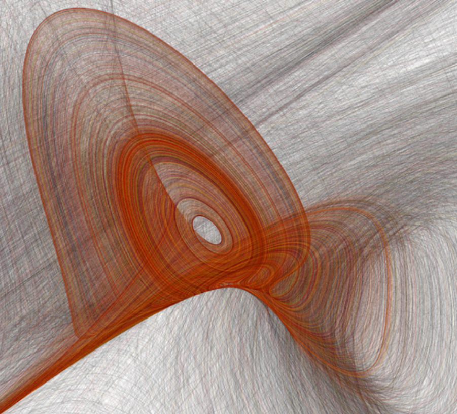

Stefan Duprey
Curriculum Vitae

Dadras-Momeni attractor
Main links
CV quant
CV expert AI
LinkedIn
GitHub
Slideshare
Top 1% Kaggle
Quantitative Expertise
My courses realized in french engineering schools
Numerical Optimization
Probability
Timeseries modeling
Python
Blockchain
Design patterns
Martingales and convergence
Langchain
Discrete maths
Fast AI
A bit of mathematical art
Chaos attractor Lili flowers
Stable Diffusion AI Creations
French academy note on a new finite axisymetric element